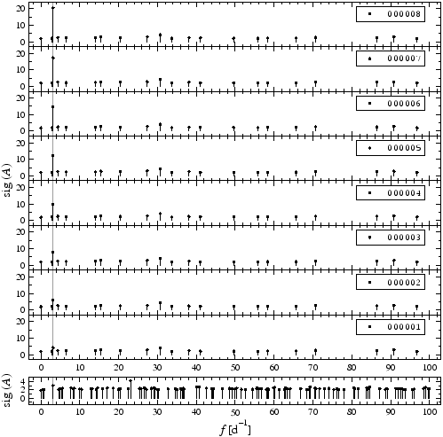

CINDERELLA expects at least two time series input files named according to #index#.<project>.dat. In this context, #index# is a placeholder for a six-digit index of the file. Note that only files with consecutive indices are appropriately recognised by CINDERELLA. The conventions are compatible with the SIGSPEC MultiFile mode (see SIGSPEC manual, p. ), whence the most convenient preparation of data for CINDERELLA is the SIGSPEC MultiFile computation.
), whence the most convenient preparation of data for CINDERELLA is the SIGSPEC MultiFile computation.
The only restrictions to the format of the time series input files are that the number of items per row has to be constant for all rows in the file and that the columns have to be seperated by at least one whitespace character or tab. Dataset entries need not to be numeric, except for the columns specified as time, observable, and weights. The conventions for specifying these three column types are consistent with SIGSPEC. See SIGSPEC manual, pp. ,
,  for details.
for details.
|

|